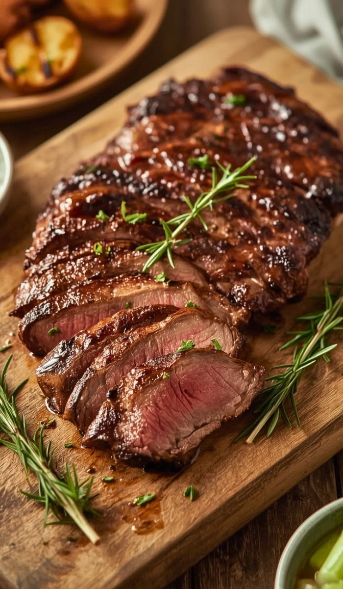

Steak

Description
A flat cut of beef—typically 1 to 1.5 inches thick—cut perpendicular to the muscle fibers for a tender texture, then seared or grilled to develop a rich, savory crust.
Ingredients
- beef cuts
- seasonings
- cloves
- garlic
- fresh herbs
- cooking oil
- butter
Steps
- Take the beef out of the refrigerator and pat dry
- Rub or sprinkle both sides generously with kosher salt and freshly ground black pepper
- Heat a heavy cast-iron skillet over high heat until the pan is smoking hot. Add the neutral oil, then place the steak into the pan. Sear undisturbed for 3 to 4 minutes to form a deep brown crust, then flip.
- Reduce the heat slightly and add the unsalted butter, smashed garlic cloves, and fresh rosemary or thyme sprigs to the pan. Tilt the pan and continuously spoon the foaming, aromatic butter over the steak for 2 to 3 minute, check the temperature and stop at your preferred donness
- Allow to cool then serve
Home